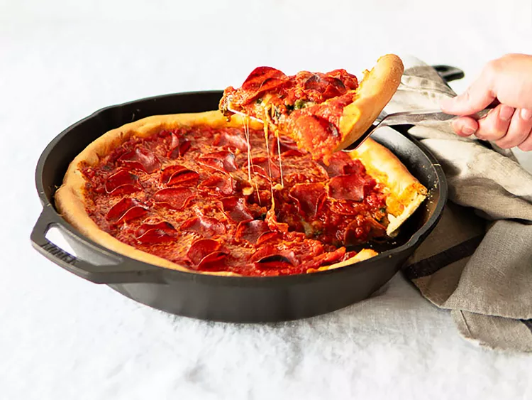

It may seem difficult to make a Chicago deep dish, but with our recipe, it'll be easy as cake, or rather pizza (yes we like to joke around here).
Here's what the final product will look like:
Dissolve yeast and sugar in warm water in a bowl. Let stand until yeast softens and begins to form a creamy foam, 5 to 10 minutes. Combine yeast mixture, flour, corn oil, and kosher salt in a large stand mixer fitted with the dough hook; knead until dough holds together but is still slightly sticky, about 2 minutes.
Form dough into a ball and transfer to a buttered bowl. Turn to coat dough with butter, then cover the bowl with a towel and let rise in a warm place until doubled in volume, about 6 hours. Punch down dough and let rest for 10 to 15 minutes. Press dough into a 10-inch deep-dish pizza pan and follow your pizza recipe.